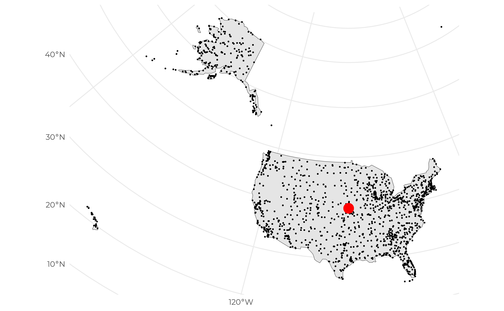

| extension_name | loaded | installed | description | aliases | extension_version |
|---|---|---|---|---|---|
| arrow | FALSE | FALSE | A zero-copy data integration between Apache Arrow and DuckDB | ||
| autocomplete | FALSE | FALSE | Adds support for autocomplete in the shell | ||
| aws | FALSE | FALSE | Provides features that depend on the AWS SDK | ||
| azure | FALSE | FALSE | Adds a filesystem abstraction for Azure blob storage to DuckDB | ||
| excel | FALSE | FALSE | Adds support for Excel-like format strings | ||
| fts | FALSE | FALSE | Adds support for Full-Text Search Indexes | ||
| httpfs | FALSE | TRUE | Adds support for reading and writing files over a HTTP(S) connection | http, https, s3 | |
| iceberg | FALSE | FALSE | Adds support for Apache Iceberg | ||
| icu | FALSE | FALSE | Adds support for time zones and collations using the ICU library | ||
| inet | FALSE | FALSE | Adds support for IP-related data types and functions | ||
| jemalloc | FALSE | FALSE | Overwrites system allocator with JEMalloc | ||
| json | FALSE | FALSE | Adds support for JSON operations | ||
| motherduck | FALSE | FALSE | Enables motherduck integration with the system | md | |
| mysql_scanner | FALSE | FALSE | Adds support for connecting to a MySQL database | mysql | |
| parquet | TRUE | TRUE | Adds support for reading and writing parquet files | ||
| postgres_scanner | FALSE | FALSE | Adds support for connecting to a Postgres database | postgres | |
| spatial | FALSE | TRUE | Geospatial extension that adds support for working with spatial data and functions | ||
| sqlite_scanner | FALSE | FALSE | Adds support for reading and writing SQLite database files | sqlite, sqlite3 | |
| substrait | FALSE | FALSE | Adds support for the Substrait integration | ||
| tpcds | FALSE | FALSE | Adds TPC-DS data generation and query support | ||
| tpch | FALSE | FALSE | Adds TPC-H data generation and query support |
In this blog post, I will show you how to read and transform spatial data hosted in the cloud with DuckDB1. I will use the nycflights13, a popular dataset for learning data science. I will also use the sf package to manipulate spatial data. We will first start our journey by using DuckDB to read tabular data from parquet files from an online repository. Then with dbplyr as a backbend, we will query the data. Then, with the help of the DuckDB spatial extension, I will introduce how we can do geospatial processing within DuckDB and sf.
What is DuckDB?
DuckDB is an embeddable SQL OLAP database management system designed for efficient data querying and manipulation. It excels in processing large datasets swiftly and is particularly adept at handling complex analytical tasks while offering the flexibility to seamlessly integrate with various data sources and formats. DuckDB also comes with a set of extensions:
Create a DuckDB remote connection
For the following example, I will work with the nycflights13 data saved in parquet file format and hosted inside S3 buckets. I will use the httpfs extension to read the data. The httpfs extension allows DuckDB to read data from remote HTTP(S) sources which is exactly what we need here to read that data from the cloud.
The first thing I need to do is to create a DuckDB connection using DBI::dbConnect() and install the httpfs extension and load it.
Now that we have a connection, we can start exploring the data! All tables are stored in parquet files and hosted in s3 buckets. Here are the links to the data:
I will start by reading the flights table using the SQL syntax. To do so, I will use the read_parquet() function from DuckDB to read the parquet file and return a DuckDB table. Then, I will use the CREATE OR REPLACE TABLE statement to create a new table called flights and store the data returned by read_parquet().
We can verify that the table was created by using the SHOW ALL TABLES statement.
dbSendQuery(conn, "SHOW ALL TABLES;") |>
dbFetch() |>
as_tibble()
#> # A tibble: 1 × 6
#> database schema name column_names column_types temporary
#> <chr> <chr> <chr> <list> <list> <lgl>
#> 1 memory main flights <chr [19]> <chr [19]> FALSEWe can further explore the table by using the following statements.
dbSendQuery(conn, "FROM flights LIMIT 10;") |>
dbFetch() |>
as_tibble()
#> # A tibble: 10 × 19
#> year month day dep_time sched_dep_time dep_delay arr_time sched_arr_time
#> <int> <int> <int> <int> <int> <dbl> <int> <int>
#> 1 2013 1 1 517 515 2 830 819
#> 2 2013 1 1 533 529 4 850 830
#> 3 2013 1 1 542 540 2 923 850
#> 4 2013 1 1 544 545 -1 1004 1022
#> 5 2013 1 1 554 600 -6 812 837
#> 6 2013 1 1 554 558 -4 740 728
#> 7 2013 1 1 555 600 -5 913 854
#> 8 2013 1 1 557 600 -3 709 723
#> 9 2013 1 1 557 600 -3 838 846
#> 10 2013 1 1 558 600 -2 753 745
#> # ℹ 11 more variables: arr_delay <dbl>, carrier <chr>, flight <int>,
#> # tailnum <chr>, origin <chr>, dest <chr>, air_time <dbl>, distance <dbl>,
#> # hour <dbl>, minute <dbl>, time_hour <dttm>
dbSendQuery(conn, "SHOW flights;") |>
dbFetch() |>
as_tibble()
#> # A tibble: 19 × 6
#> column_name column_type null key default extra
#> <chr> <chr> <chr> <chr> <chr> <chr>
#> 1 year INTEGER YES <NA> <NA> <NA>
#> 2 month INTEGER YES <NA> <NA> <NA>
#> 3 day INTEGER YES <NA> <NA> <NA>
#> 4 dep_time INTEGER YES <NA> <NA> <NA>
#> 5 sched_dep_time INTEGER YES <NA> <NA> <NA>
#> 6 dep_delay DOUBLE YES <NA> <NA> <NA>
#> 7 arr_time INTEGER YES <NA> <NA> <NA>
#> 8 sched_arr_time INTEGER YES <NA> <NA> <NA>
#> 9 arr_delay DOUBLE YES <NA> <NA> <NA>
#> 10 carrier VARCHAR YES <NA> <NA> <NA>
#> 11 flight INTEGER YES <NA> <NA> <NA>
#> 12 tailnum VARCHAR YES <NA> <NA> <NA>
#> 13 origin VARCHAR YES <NA> <NA> <NA>
#> 14 dest VARCHAR YES <NA> <NA> <NA>
#> 15 air_time DOUBLE YES <NA> <NA> <NA>
#> 16 distance DOUBLE YES <NA> <NA> <NA>
#> 17 hour DOUBLE YES <NA> <NA> <NA>
#> 18 minute DOUBLE YES <NA> <NA> <NA>
#> 19 time_hour TIMESTAMP WITH TIME ZONE YES <NA> <NA> <NA>
dbSendQuery(conn, "SUMMARIZE flights;") |>
dbFetch() |>
as_tibble()
#> # A tibble: 19 × 12
#> column_name column_type min max approx_unique avg std q25 q50
#> <chr> <chr> <chr> <chr> <dbl> <chr> <chr> <chr> <chr>
#> 1 year INTEGER 2013 2013 1 2013… 0.0 2013 2013
#> 2 month INTEGER 1 12 12 6.54… 3.41… 4 7
#> 3 day INTEGER 1 31 31 15.7… 8.76… 8 16
#> 4 dep_time INTEGER 1 2400 1317 1349… 488.… 905 1382
#> 5 sched_dep_time INTEGER 106 2359 1023 1344… 467.… 909 1377
#> 6 dep_delay DOUBLE -43.0 1301… 533 12.6… 40.2… -5.0 -1.5…
#> 7 arr_time INTEGER 1 2400 1418 1502… 533.… 1098 1535
#> 8 sched_arr_time INTEGER 1 2359 1155 1536… 497.… 1124 1570
#> 9 arr_delay DOUBLE -86.0 1272… 581 6.89… 44.6… -17.… -5.0…
#> 10 carrier VARCHAR 9E YV 16 <NA> <NA> <NA> <NA>
#> 11 flight INTEGER 1 8500 3908 1971… 1632… 557 1497
#> 12 tailnum VARCHAR D942… N9EA… 4005 <NA> <NA> <NA> <NA>
#> 13 origin VARCHAR EWR LGA 3 <NA> <NA> <NA> <NA>
#> 14 dest VARCHAR ABQ XNA 105 <NA> <NA> <NA> <NA>
#> 15 air_time DOUBLE 20.0 695.0 516 150.… 93.6… 82.1… 129.…
#> 16 distance DOUBLE 17.0 4983… 210 1039… 733.… 508.… 865.…
#> 17 hour DOUBLE 1.0 23.0 20 13.1… 4.66… 8.99… 13.4…
#> 18 minute DOUBLE 0.0 59.0 60 26.2… 19.3… 7.98… 28.9…
#> 19 time_hour TIMESTAMP W… 2013… 2014… 6865 <NA> <NA> <NA> <NA>
#> # ℹ 3 more variables: q75 <chr>, count <dbl>, null_percentage <dbl>Good, we now have created a table, we can start querying it. Let’s start by calculating the average delay per destination. I will show how to do it with both DuckDB and R.
Data wrangling using DuckDB
I will use the GROUP BY statement to group the data by destination and then use the AVG() function to calculate the average delay and finally order the results with the ORDER BY clause.
df1 <- dbSendQuery(
conn,
"SELECT dest, AVG(arr_delay) AS delay, COUNT(*) AS n
FROM flights GROUP BY dest ORDER BY delay DESC;"
) |>
dbFetch() |>
as_tibble()
df1
#> # A tibble: 105 × 3
#> dest delay n
#> <chr> <dbl> <dbl>
#> 1 CAE 41.764 116
#> 2 TUL 33.660 315
#> 3 OKC 30.619 346
#> 4 JAC 28.095 25
#> 5 TYS 24.069 631
#> 6 MSN 20.196 572
#> 7 RIC 20.111 2454
#> 8 CAK 19.698 864
#> 9 DSM 19.006 569
#> 10 GRR 18.190 765
#> # ℹ 95 more rowsData wrangling using dbplyr
If you prefer the syntax of dplyr syntax, you can use it to query DuckDB. First, we need to pull the data using the tbl() function.
tbl(conn, "flights")
#> # Source: table<flights> [?? x 19]
#> # Database: DuckDB v0.10.2 [unknown@Linux 6.5.0-28-generic:R 4.4.0/:memory:]
#> year month day dep_time sched_dep_time dep_delay arr_time sched_arr_time
#> <int> <int> <int> <int> <int> <dbl> <int> <int>
#> 1 2013 1 1 517 515 2 830 819
#> 2 2013 1 1 533 529 4 850 830
#> 3 2013 1 1 542 540 2 923 850
#> 4 2013 1 1 544 545 -1 1004 1022
#> 5 2013 1 1 554 600 -6 812 837
#> 6 2013 1 1 554 558 -4 740 728
#> 7 2013 1 1 555 600 -5 913 854
#> 8 2013 1 1 557 600 -3 709 723
#> 9 2013 1 1 557 600 -3 838 846
#> 10 2013 1 1 558 600 -2 753 745
#> # ℹ more rows
#> # ℹ 11 more variables: arr_delay <dbl>, carrier <chr>, flight <int>,
#> # tailnum <chr>, origin <chr>, dest <chr>, air_time <dbl>, distance <dbl>,
#> # hour <dbl>, minute <dbl>, time_hour <dttm>This gives us something to work with using the dplyr syntax. We can now use the group_by() function to group the data by destination and then use the summarize() function to calculate the average delay and the number of flights per destination. Finally, we can use the arrange() function to order the results by delay. But before we get the results, we can show what is the SQL query that was generated with the show_query() function from the dbplyr package.
tbl(conn, "flights") |>
group_by(dest) |>
summarize(
n = n(),
delay = mean(arr_delay, na.rm = TRUE)
) |>
arrange(desc(delay)) |>
show_query()
#> <SQL>
#> SELECT dest, COUNT(*) AS n, AVG(arr_delay) AS delay
#> FROM flights
#> GROUP BY dest
#> ORDER BY delay DESCNote that it looks pretty similar to the SQL query we wrote earlier. Now, we can get the results by using the collect() function.
df2 <- tbl(conn, "flights") |>
group_by(dest) |>
summarize(
delay = mean(arr_delay, na.rm = TRUE),
n = n()
) |>
arrange(desc(delay)) |>
collect()
df2
#> # A tibble: 105 × 3
#> dest delay n
#> <chr> <dbl> <dbl>
#> 1 CAE 41.764 116
#> 2 TUL 33.660 315
#> 3 OKC 30.619 346
#> 4 JAC 28.095 25
#> 5 TYS 24.069 631
#> 6 MSN 20.196 572
#> 7 RIC 20.111 2454
#> 8 CAK 19.698 864
#> 9 DSM 19.006 569
#> 10 GRR 18.190 765
#> # ℹ 95 more rowsWe can verify that both data frames are the same.
identical(df1, df2)
#> [1] TRUECreate a local database
Up to now, we have been working with an in-memory database. This means that once we close R, all the data will be lost. But what if we want to work with a local database? Well, it is pretty easy to do. We just need to specify the path to the database file when we create our connection. We can also specify if we want to create a read-only database or not.
library("DBI")
# to start an in-memory database
con <- dbConnect(duckdb::duckdb(), dbdir = ":memory:")
# to use a database file (not shared between processes)
con <- dbConnect(duckdb::duckdb(), dbdir = "my-db.duckdb", read_only = FALSE)
# to use a database file (shared between processes)
con <- dbConnect(duckdb::duckdb(), dbdir = "my-db.duckdb", read_only = TRUE)Let’s go spatial 🚀🚀🚀
If you know the nycflights13 dataset, you have noticed that the airports table has a lon and lat columns. This means that we can use these columns to create a geometry column and do some geospatial processing. To do so, we will need to install the spatial extension and load it. But first, let’s create the airports table as we did for the flights table.
We can verify that we now have two tables.
dbSendQuery(conn, "SHOW ALL TABLES;") |>
dbFetch() |>
as_tibble()
#> # A tibble: 2 × 6
#> database schema name column_names column_types temporary
#> <chr> <chr> <chr> <list> <list> <lgl>
#> 1 memory main airports <chr [8]> <chr [8]> FALSE
#> 2 memory main flights <chr [19]> <chr [19]> FALSEAnd also have a glimpse of the data.
dbSendQuery(conn, "SHOW airports;") |>
dbFetch() |>
as_tibble()
#> # A tibble: 8 × 6
#> column_name column_type null key default extra
#> <chr> <chr> <chr> <chr> <chr> <chr>
#> 1 faa VARCHAR YES <NA> <NA> <NA>
#> 2 name VARCHAR YES <NA> <NA> <NA>
#> 3 lat DOUBLE YES <NA> <NA> <NA>
#> 4 lon DOUBLE YES <NA> <NA> <NA>
#> 5 alt DOUBLE YES <NA> <NA> <NA>
#> 6 tz DOUBLE YES <NA> <NA> <NA>
#> 7 dst VARCHAR YES <NA> <NA> <NA>
#> 8 tzone VARCHAR YES <NA> <NA> <NA>
dbSendQuery(conn, "SHOW airports;") |>
dbFetch()
#> column_name column_type null key default extra
#> 1 faa VARCHAR YES <NA> <NA> <NA>
#> 2 name VARCHAR YES <NA> <NA> <NA>
#> 3 lat DOUBLE YES <NA> <NA> <NA>
#> 4 lon DOUBLE YES <NA> <NA> <NA>
#> 5 alt DOUBLE YES <NA> <NA> <NA>
#> 6 tz DOUBLE YES <NA> <NA> <NA>
#> 7 dst VARCHAR YES <NA> <NA> <NA>
#> 8 tzone VARCHAR YES <NA> <NA> <NA>At this point, this is a simple table with no geometry column. To create the geometry column, we first need to install the spatial extension and load it.
dbExecute(conn, "INSTALL 'spatial'; LOAD 'spatial';")
#> [1] 0This is now the time to let the magic happen. I will create a new table airports_sf and use the ST_asWKB() function to create the geometry column. The ST_asWKB() function takes two arguments: the geometry type and the geometry column. In our case, we will use the ST_Point() function to create a point geometry from the lon and lat columns that are present in the airports table.
#' Here I am creating the geometry column, looks like it worked.
dbExecute(
conn,
"CREATE OR REPLACE TABLE airports_sf AS SELECT *,
ST_asWKB(ST_Point(lon, lat)) as geometry, FROM airports;"
)
#> [1] 1458Looks like it worked! There is a geometry column in the airports_sf table. We can verify that by using the SHOW airports_sf; statement.
dbSendQuery(conn, "SHOW airports_sf;") |>
dbFetch()
#> column_name column_type null key default extra
#> 1 faa VARCHAR YES <NA> <NA> <NA>
#> 2 name VARCHAR YES <NA> <NA> <NA>
#> 3 lat DOUBLE YES <NA> <NA> <NA>
#> 4 lon DOUBLE YES <NA> <NA> <NA>
#> 5 alt DOUBLE YES <NA> <NA> <NA>
#> 6 tz DOUBLE YES <NA> <NA> <NA>
#> 7 dst VARCHAR YES <NA> <NA> <NA>
#> 8 tzone VARCHAR YES <NA> <NA> <NA>
#> 9 geometry WKB_BLOB YES <NA> <NA> <NA>Querying spatial data
With the geometry created, we can now do some geospatial processing. Let’s start by calculating the distance between the airports and a point located at longitude -100 and latitude 40. To do so, we will use the ST_GeomFromWKB() function to create a geometry from the geometry column. Finally, we will use the ST_Distance() function to calculate the distance between the airports and a point located at longitude -100 and latitude 40. We will order the results by decreasing distances. If we look at the extension documentation, we note that the ST_Distance function operates on two geometry. However, the geometry column is of type WKB (well-known binary) and need to be converted to geom with ST_GeomFromWKB(). Finally, we can use the ST_Distance() function to calculate the distance between the airports and a point located at longitude -100 and latitude 40. 3
dbSendQuery(conn, "SELECT faa, name,
st_distance(ST_Transform(ST_GeomFromWKB(geometry), 'EPSG:4326', 'EPSG:4326'),
ST_Transform(ST_Point(-100, 40), 'EPSG:4326', 'EPSG:4326')) as dist from
airports_sf ORDER BY dist DESC") |>
dbFetch() |>
as_tibble()
#> # A tibble: 1,458 × 3
#> faa name dist
#> <chr> <chr> <dbl>
#> 1 ADK Adak Airport 77.561
#> 2 GAM Gambell Airport 75.568
#> 3 AKB Atka Airport 75.206
#> 4 SYA Eareckson As 75.196
#> 5 SVA Savoonga Airport 74.366
#> 6 WAA Wales Airport 72.756
#> 7 TNC Tin City LRRS Airport 72.573
#> 8 PHO Point Hope Airport 72.566
#> 9 SNP St Paul Island 72.289
#> 10 LUR Cape Lisburne Lrrs 72.141
#> # ℹ 1,448 more rowsWhat is nice, is that it is possible to use st_read() from sf to read the data directly from DuckDB. To do so, we need to specify the connection the query (which columns from the table we want) and the geometry column.
library(sf)
airports_sf <- st_read(
conn,
query = "SELECT * FROM airports_sf;",
geometry_column = "geometry"
)
airports_sf
#> Simple feature collection with 1458 features and 8 fields
#> Geometry type: POINT
#> Dimension: XY
#> Bounding box: xmin: -176.646 ymin: 19.72137 xmax: -42.89833 ymax: 72.27083
#> CRS: NA
#> First 10 features:
#> faa name lat lon alt tz dst
#> 1 04G Lansdowne Airport 41.13047 -80.61958 1044 -5 A
#> 2 06A Moton Field Municipal Airport 32.46057 -85.68003 264 -6 A
#> 3 06C Schaumburg Regional 41.98934 -88.10124 801 -6 A
#> 4 06N Randall Airport 41.43191 -74.39156 523 -5 A
#> 5 09J Jekyll Island Airport 31.07447 -81.42778 11 -5 A
#> 6 0A9 Elizabethton Municipal Airport 36.37122 -82.17342 1593 -5 A
#> 7 0G6 Williams County Airport 41.46731 -84.50678 730 -5 A
#> 8 0G7 Finger Lakes Regional Airport 42.88356 -76.78123 492 -5 A
#> 9 0P2 Shoestring Aviation Airfield 39.79482 -76.64719 1000 -5 U
#> 10 0S9 Jefferson County Intl 48.05381 -122.81064 108 -8 A
#> tzone geometry
#> 1 America/New_York POINT (-80.61958 41.13047)
#> 2 America/Chicago POINT (-85.68003 32.46057)
#> 3 America/Chicago POINT (-88.10124 41.98934)
#> 4 America/New_York POINT (-74.39156 41.43191)
#> 5 America/New_York POINT (-81.42778 31.07447)
#> 6 America/New_York POINT (-82.17342 36.37122)
#> 7 America/New_York POINT (-84.50678 41.46731)
#> 8 America/New_York POINT (-76.78123 42.88356)
#> 9 America/New_York POINT (-76.64719 39.79482)
#> 10 America/Los_Angeles POINT (-122.8106 48.05381)Note that if you want to write the data to a local file without using, so we can reuse it later, you can use the COPY statement. Here I am writing the airports_sf table to a GeoJSON file. Note that I am using the LAYER_CREATION_OPTIONS to specify that I want to write the bounding box to the file.
dbExecute(conn, "COPY airports_sf TO '~/Desktop/airports_sf.geojson' WITH (FORMAT GDAL, DRIVER 'GeoJSON', LAYER_CREATION_OPTIONS 'WRITE_BBOX=YES')")While I am there, why not visualize the data?
library(rnaturalearth)
dest_proj <- "ESRI:102008"
usa <- ne_countries(
country = "United States of America",
returnclass = "sf"
) |>
st_transform(dest_proj)
airports_sf |>
st_set_crs(4326) |>
ggplot() +
geom_sf(data = usa) +
geom_sf(size = 0.25) +
geom_point(aes(x = -100, y = 40), size = 5, color = "red") +
coord_sf(crs = dest_proj) +
theme(
axis.title = element_blank()
)
Finally, do not forget to close your connection!
dbDisconnect(conn, disconnect = TRUE)Ressources
- https://duckdb.org/docs/extensions/spatial
- https://duckdb.org/2023/04/28/spatial.html
- https://tech.marksblogg.com/duckdb-gis-spatial-extension.html
- https://youtu.be/ZX5FdqzGT1E
- https://youtu.be/ljzpm3Mrw-I?list=PLIYcNkSjh-0ztvwoAp3GeW8HNSUSk_q3K
Session info
#> ─ Session info ───────────────────────────────────────────────────────────────────────────────────────────────────────
#> setting value
#> version R version 4.4.0 (2024-04-24)
#> os Linux Mint 21.3
#> system x86_64, linux-gnu
#> ui X11
#> language en_CA:en
#> collate en_CA.UTF-8
#> ctype en_CA.UTF-8
#> tz America/Montreal
#> date 2024-05-02
#> pandoc 2.9.2.1 @ /usr/bin/ (via rmarkdown)
#>
#> ─ Packages ───────────────────────────────────────────────────────────────────────────────────────────────────────────
#> ! package * version date (UTC) lib source
#> P blob 1.2.4 2023-03-17 [?] RSPM
#> P cachem 1.0.8 2023-05-01 [?] RSPM
#> P class 7.3-22 2023-05-03 [?] CRAN (R 4.3.1)
#> P classInt 0.4-10 2023-09-05 [?] RSPM
#> P cli 3.6.2 2023-12-11 [?] RSPM
#> P codetools 0.2-19 2023-02-01 [?] CRAN (R 4.2.2)
#> P colorspace 2.1-0 2023-01-23 [?] RSPM
#> P DBI * 1.2.2 2024-02-16 [?] RSPM
#> P dbplyr 2.5.0 2024-03-19 [?] RSPM
#> P devtools 2.4.5 2022-10-11 [?] RSPM (R 4.4.0)
#> P digest 0.6.35 2024-03-11 [?] RSPM
#> P dplyr * 1.1.4 2023-11-17 [?] RSPM
#> P duckdb * 0.10.2 2024-05-01 [?] CRAN (R 4.4.0)
#> P e1071 1.7-14 2023-12-06 [?] RSPM
#> P ellipsis 0.3.2 2021-04-29 [?] RSPM
#> P evaluate 0.23 2023-11-01 [?] RSPM
#> P extrafont 0.19 2023-01-18 [?] RSPM
#> P extrafontdb 1.0 2012-06-11 [?] RSPM
#> P fansi 1.0.6 2023-12-08 [?] RSPM
#> P farver 2.1.1 2022-07-06 [?] RSPM
#> P fastmap 1.1.1 2023-02-24 [?] RSPM
#> P forcats * 1.0.0 2023-01-29 [?] RSPM
#> P fs 1.6.4 2024-04-25 [?] CRAN (R 4.4.0)
#> P generics 0.1.3 2022-07-05 [?] RSPM
#> P ggplot2 * 3.5.1 2024-04-23 [?] RSPM
#> P ggpmthemes * 0.0.2 2024-04-25 [?] Github (pmassicotte/ggpmthemes@993d61e)
#> P glue 1.7.0 2024-01-09 [?] RSPM
#> P gt 0.10.1 2024-01-17 [?] RSPM
#> P gtable 0.3.5 2024-04-22 [?] RSPM
#> P hms 1.1.3 2023-03-21 [?] RSPM
#> P htmltools 0.5.8.1 2024-04-04 [?] RSPM
#> P htmlwidgets 1.6.4 2023-12-06 [?] RSPM
#> P httpuv 1.6.15 2024-03-26 [?] RSPM
#> P httr 1.4.7 2023-08-15 [?] RSPM
#> P jsonlite 1.8.8 2023-12-04 [?] RSPM
#> P KernSmooth 2.23-22 2023-07-10 [?] CRAN (R 4.3.1)
#> P knitr 1.46 2024-04-06 [?] RSPM
#> P later 1.3.2 2023-12-06 [?] RSPM
#> P lifecycle 1.0.4 2023-11-07 [?] RSPM
#> P lubridate * 1.9.3 2023-09-27 [?] RSPM
#> P magrittr 2.0.3 2022-03-30 [?] RSPM
#> P memoise 2.0.1 2021-11-26 [?] RSPM
#> P mime 0.12 2021-09-28 [?] RSPM
#> P miniUI 0.1.1.1 2018-05-18 [?] RSPM (R 4.4.0)
#> P munsell 0.5.1 2024-04-01 [?] RSPM
#> P pillar 1.9.0 2023-03-22 [?] RSPM
#> P pkgbuild 1.4.4 2024-03-17 [?] RSPM (R 4.4.0)
#> P pkgconfig 2.0.3 2019-09-22 [?] RSPM
#> P pkgload 1.3.4 2024-01-16 [?] RSPM (R 4.4.0)
#> P processx 3.8.4 2024-03-16 [?] RSPM
#> P profvis 0.3.8 2023-05-02 [?] RSPM (R 4.4.0)
#> P promises 1.3.0 2024-04-05 [?] RSPM
#> P proxy 0.4-27 2022-06-09 [?] RSPM
#> P ps 1.7.6 2024-01-18 [?] RSPM
#> P purrr * 1.0.2 2023-08-10 [?] RSPM
#> P quarto * 1.4 2024-03-06 [?] RSPM
#> P R.cache 0.16.0 2022-07-21 [?] RSPM
#> P R.methodsS3 1.8.2 2022-06-13 [?] RSPM
#> P R.oo 1.26.0 2024-01-24 [?] RSPM
#> P R.utils 2.12.3 2023-11-18 [?] RSPM
#> P R6 2.5.1 2021-08-19 [?] RSPM
#> P Rcpp 1.0.12 2024-01-09 [?] RSPM
#> P readr * 2.1.5 2024-01-10 [?] RSPM
#> P remotes 2.5.0 2024-03-17 [?] RSPM (R 4.4.0)
#> P renv 1.0.7 2024-04-11 [?] RSPM (R 4.4.0)
#> P rlang 1.1.3 2024-01-10 [?] RSPM
#> P rmarkdown 2.26 2024-03-05 [?] RSPM
#> P rnaturalearth * 1.0.1 2023-12-15 [?] RSPM
#> P rstudioapi 0.16.0 2024-03-24 [?] RSPM
#> P Rttf2pt1 1.3.12 2023-01-22 [?] RSPM
#> P sass 0.4.9 2024-03-15 [?] RSPM
#> P scales 1.3.0 2023-11-28 [?] RSPM
#> P sessioninfo 1.2.2 2021-12-06 [?] RSPM (R 4.4.0)
#> P sf * 1.0-16 2024-03-24 [?] RSPM
#> P shiny 1.8.1.1 2024-04-02 [?] RSPM (R 4.4.0)
#> P stringi 1.8.3 2023-12-11 [?] RSPM
#> P stringr * 1.5.1 2023-11-14 [?] RSPM
#> P styler * 1.10.3 2024-04-07 [?] RSPM
#> P terra 1.7-71 2024-01-31 [?] RSPM
#> P tibble * 3.2.1 2023-03-20 [?] RSPM
#> P tidyr * 1.3.1 2024-01-24 [?] RSPM
#> P tidyselect 1.2.1 2024-03-11 [?] RSPM
#> P tidyverse * 2.0.0 2023-02-22 [?] RSPM
#> P timechange 0.3.0 2024-01-18 [?] RSPM
#> P tzdb 0.4.0 2023-05-12 [?] RSPM
#> P units 0.8-5 2023-11-28 [?] RSPM
#> P urlchecker 1.0.1 2021-11-30 [?] RSPM (R 4.4.0)
#> P usethis 2.2.3 2024-02-19 [?] RSPM (R 4.4.0)
#> P utf8 1.2.4 2023-10-22 [?] RSPM
#> P vctrs 0.6.5 2023-12-01 [?] RSPM
#> P withr 3.0.0 2024-01-16 [?] RSPM
#> P xfun 0.43 2024-03-25 [?] RSPM
#> P xml2 1.3.6 2023-12-04 [?] RSPM
#> P xtable 1.8-4 2019-04-21 [?] RSPM (R 4.4.0)
#> P yaml 2.3.8 2023-12-11 [?] RSPM
#>
#> [1] /tmp/RtmpkDFLxI/renv-use-libpath-18824056e1c01e
#> [2] /tmp/RtmpkDFLxI/renv-sandbox
#>
#> P ── Loaded and on-disk path mismatch.
#>
#> ──────────────────────────────────────────────────────────────────────────────────────────────────────────────────────Footnotes
DuckDB preview image: https://archive.org/details/github.com-duckdb-duckdb_-_2022-08-11_05-54-07↩︎
Note that the airports table had positive longitudes. It seems that they should all be negative, so I corrected them.↩︎
Note that we are using lat/lon data for the calculation whereas a projected coordinate reference system would be better suited.↩︎
Citation
BibTeX citation:
@online{massicotte2023,
author = {Massicotte, Philippe},
title = {Unlocking {Cloud} {Data:} {A} {Step-by-Step} {Guide} to
{Reading} and {Transforming} {Spatial} {Data} with {DuckDB}},
date = {2023-09-14},
url = {https://www.pmassicotte.com/posts/2023-09-14-duckdb-parquet-spatial-s3},
langid = {en}
}
For attribution, please cite this work as:
Massicotte, Philippe. 2023. “Unlocking Cloud Data: A Step-by-Step
Guide to Reading and Transforming Spatial Data with DuckDB.”
September 14, 2023. https://www.pmassicotte.com/posts/2023-09-14-duckdb-parquet-spatial-s3.